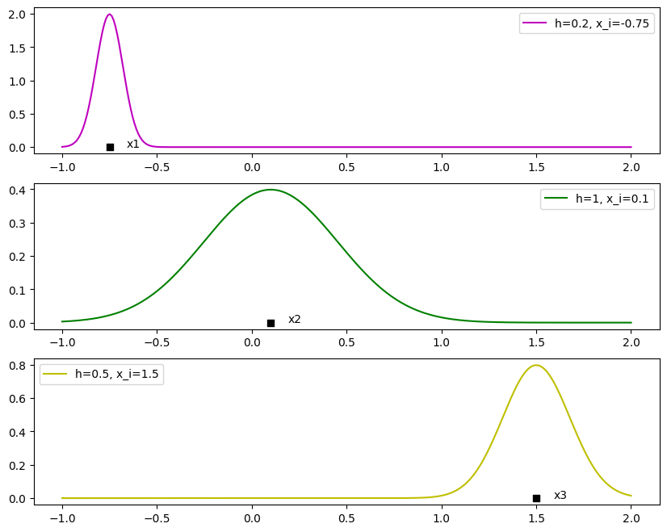

import matplotlib.pyplot as plt
import numpy as np
x = np.linspace(-3, 3, 100)
y_1 = np.exp(-1 *(np.square(x))) # exp(-x^2)
y_2 = (1/(np.sqrt(2*np.pi)) * np.exp(-1*(np.square(x)/2))) # exp((1/sqrt(2pi)) * exp(-(x^2/2))
plt.plot(x, np.c_[y_1, y_2], label=[r'$exp(-x^2)$',r'$\frac{1}{\sqrt{2\pi}} exp(-\frac{x^2}{2})$']);
plt.legend()
# Add our kernel functions
plt.plot()KDEs help us answer the question: how do we estimate the probability density function (PDF) based on observed data?
This method is non-parametric, meaning we do not make an assumption about the underlying distribution. Let’s start with histograms and further refine our model.
Histograms
Histograms are a good starting point for density estimation as they are relatively easy to make. To construct a histogram, we divide the observed data interval into adjacent, consecutive groups called ‘bins’. These are placed on the x-axis and the number of observations that fall into each bin give us the y values.
KDE
- Is a composite function made up of one kind of building block referred to as a kernel function.
- The kernel function is evaluated for each datapoint separately, and these partial results are summed to form the KDE
First Principles
Let’s start with the simplest example, take one data point x = 0. A logical PDF for a single data point would be a peak that is precisely over the data point and decays the further away we get. Take \(exp(-x^2)\) but… we need to rescale so that the area under our PDF is 1. So we end up with a kernel function that looks something like this. I’m not sure exactly how this was derived (it’s a Gaussian distribution with mean 0 and std. deviation of 1) I stole it from here who I believe stole it from here. \[K(x) = \frac{1}{\sqrt{2\pi}} exp(-\frac{x^2}{2})\]
Let’s add some extra parameters. Consider a dataset \(X\). Let \(x_i\) be the \(i\) th observation in that dataset. \(x_i\) shifts our kernel across the x axis and the kernel bandwidth, \(h\) changes the shape of our curve.
Note: we divide our kernel function by \(h\) to restore our PDF back to unit area. Now, we can estimate the PDF of any point \(x_i\) using. \[\frac{1}{h}K(\frac{x-x_i}{h})\]
import matplotlib.pyplot as plt
import numpy as np
fig, axs = plt.subplots(3, 1, figsize=(10,8))
x_points = [-0.75, 0.1, 1.5]
y_points = [0, 0, 0]
h = [0.2, 1, 0.5]
point_labels = ["x" + str(i+1) for i in range(len(x_points))]
colours = ["m", "g", "y"]
for i in range(3):
# Plot our data points
axs[i].scatter(x_points[i], y_points[i], color="black", marker="s")
axs[i].text(x_points[i]+0.09, y_points[i], point_labels[i])
# Plot our PDF
x = np.linspace(-1, 2, 300)
y = (1/h[i]) * (1/(np.sqrt(2*np.pi))) * np.exp(-1*(np.square(((x-x_points[i])/h[i]*2))))
axs[i].plot(x, y, linestyle="-", label=f"h={h[i]}, x_i={x_points[i]}", color=colours[i])
axs[i].legend()
How do we estimate the PDF across our entire dataset, \(X\)? Let’s extend our previous function to generalise to \(n\) data points
TODO: the rest is a work in progress.
import matplotlib.pyplot as plt
import numpy as np
fig, (ax1, ax2, ax3) = plt.subplots(3, 1)
x_points = [0, 1.5, -1]
y_points = [0, 0, 0]
point_labels = ["x" + str(i+1) for i in range(len(x_points))]
# Add points and labels
plt.scatter(x_points, y_points, color="black", marker="s")
for i in range(len(x_points)):
plt.text(x_points[i]+0.09, y_points[i], point_labels[i])
# Add our kernel functions
plt.plot()\(K(x) = 1/sqrt(2pi) exp[-(x^2)/2]\)
This is our Kernel function and is a valid PDF. Effectively a Gaussian distribution with mean 0 and unit variance
This is our Gaussian kernel. If we expand it to N datapoints and scale back our PDF, we get a smoother fit of our PDF.
TODO: - Show a script deriving from first principles using a Guassian Kernel function (like in the towardsdatascience paper) - Use seaborn as a more polished/modern/faster way of doing it. - Look into scikit learn and the KernelDensity function that is has. (you can choose different kernels)
Useful Reading
https://www.mvstat.net/tduong/research/seminrs/seminar-2001-05/ https://towardsdatascience.com/kerneldensit-estimation-explained-step-by-step-7cc5b5bc4517/ https://chriskhanhtran.github.io/_poss/202001-13-portfolio-tutorial/ https://quarto.org/